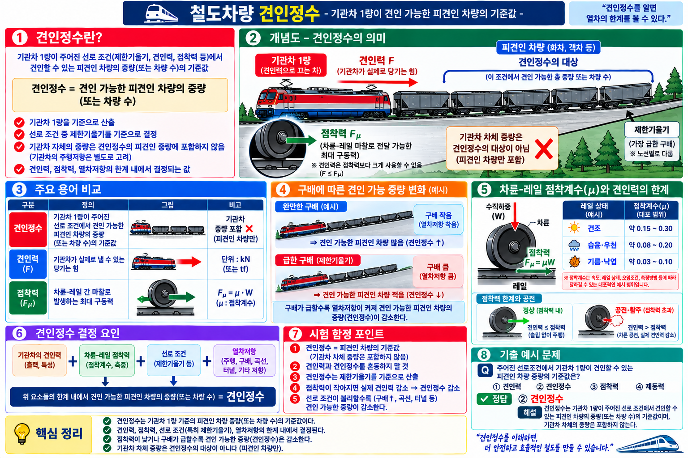

§0 선행 용어
견인정수 (Tractive Number)
기관차 1량이 주어진 선로 조건(제한기울기·견인력·점착력)에서 견인 가능한 피견인 차량의 중량(또는 차량 수)의 기준값.
견인력 (Tractive Effort)
기관차가 실제로 낼 수 있는 힘. 피견인 차량을 끌어당기는 구동력.
점착력 (Adhesion Force)
차륜과 레일 사이의 마찰력. 견인력이 점착력을 초과하면 공전(空轉)이 발생한다.
제한기울기 (Ruling Gradient)
노선에서 가장 급한 구배. 견인정수 산출 시 기준이 되는 기울기.
§1 견인정수 개념 (SOURCE: 4.html 개념51)
4.html 개념51
견인정수 — 견인 가능 차량의 기준값
★★★
| 항목 | 내용 |
|---|
| 정의 |
기관차 1량이 주어진 선로 조건(제한기울기·견인력·점착력)에서 견인 가능한 피견인 차량의 중량(또는 차량 수)의 기준값 |
| 산출 기준 |
제한기울기(가장 급한 구배)를 기준으로 산출 |
| 포함 대상 |
피견인 차량의 중량(또는 차량 수) — 기관차 자체 중량은 포함하지 않음 |
| 견인력 |
기관차가 실제로 낼 수 있는 힘 |
⚠️ 함정: 견인정수 = 피견인 차량의 기준값 (기관차 중량 포함 ❌)
기관차 자체 중량은 견인정수 산출에 포함하지 않는다.

[VIS-096] 철도차량 견인정수 이미지
VIS-096 · 철도차량 견인정수
§2 견인력 vs 점착력 관계
4.html 개념51 · 이론 배경
견인력과 점착력의 관계
★★★
| 조건 | 관계 | 결과 |
|---|
| 점착 한계 |
견인력 ≤ 점착력 |
정상 견인 (공전 없음) |
| 점착 초과 |
견인력 > 점착력 |
공전(空轉) 발생 |
| 가속 조건 |
견인력 > 주행저항 |
열차 가속 |
📌 견인력은 점착력을 초과할 수 없다. 점착력은 견인력의 상한선 역할을 한다.
견인력이 주행저항보다 크면 열차가 가속된다.
§3 시험 포인트 · 함정
🎯 핵심 암기 포인트
- 견인정수: 기관차 1량이 선로 조건(제한기울기·견인력·점착력)을 기준으로 견인 가능한 피견인 차량 중량(또는 차량수)의 기준값
- 견인정수 산출 기준: 제한기울기(가장 급한 구배)
- 기관차 자체 중량은 견인정수에 포함하지 않음
- 견인력: 기관차가 실제로 낼 수 있는 힘
- 견인력 ≤ 점착력 → 정상 견인 / 견인력 > 점착력 → 공전 발생
- 견인력 > 주행저항 → 열차 가속
| 함정 선택지 | 정오 | 근거 |
|---|
| "견인정수에 기관차 중량이 포함된다" |
❌ 오답 |
견인정수는 피견인 차량의 기준값. 기관차 중량 포함 ❌ |
| "견인정수는 평균 기울기를 기준으로 산출한다" |
❌ 오답 |
제한기울기(가장 급한 구배)를 기준으로 산출 |
| "견인력이 점착력보다 크면 정상 견인된다" |
❌ 오답 |
견인력 > 점착력이면 공전(空轉) 발생 |
📝 기출문제 (1문항)
※ 전체 문제·정답·해설이 펼쳐진 상태로 표시됩니다.
Q1
engineering id:63 · SOURCE: 4.html 개념51 · 견인정수
주어진 선로조건에서 기관차 1량이 견인할 수 있는 차량 중량(또는 차량 수)의 기준값은?
- ① 견인력
- ② 견인정수
- ③ 점착력
- ④ 출발저항
정답: ② 견인정수
견인정수: 기관차가 선로 조건(제한기울기·견인력·점착력)을 기준으로 견인 가능한 피견인 차량 중량(또는 차량수)의 기준값.